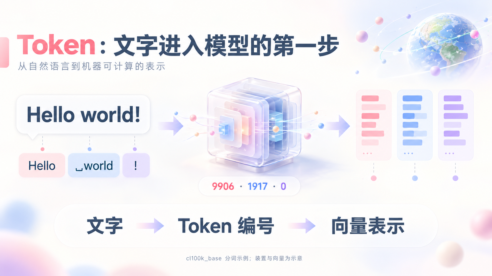
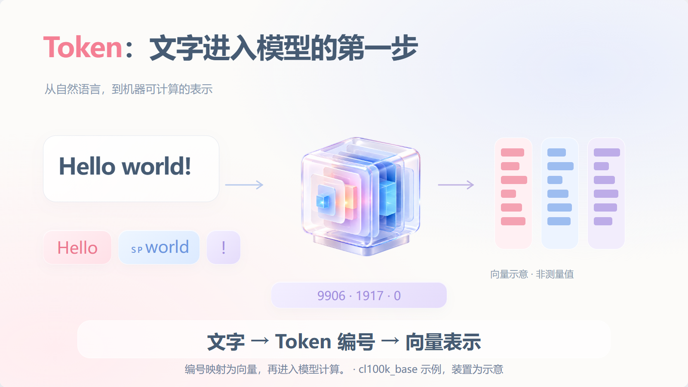
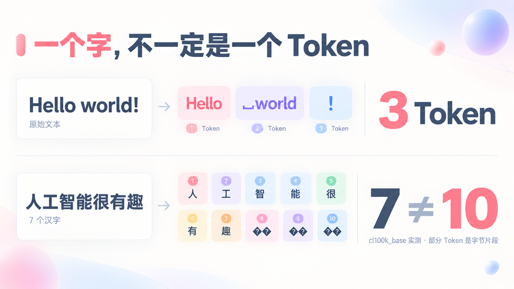
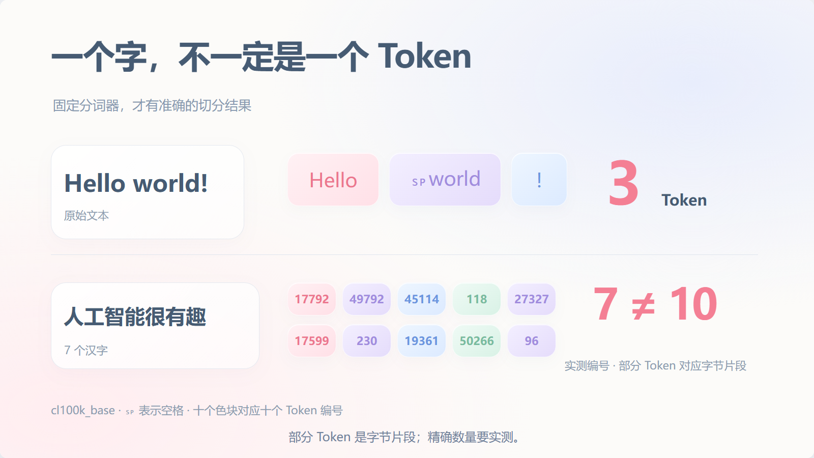
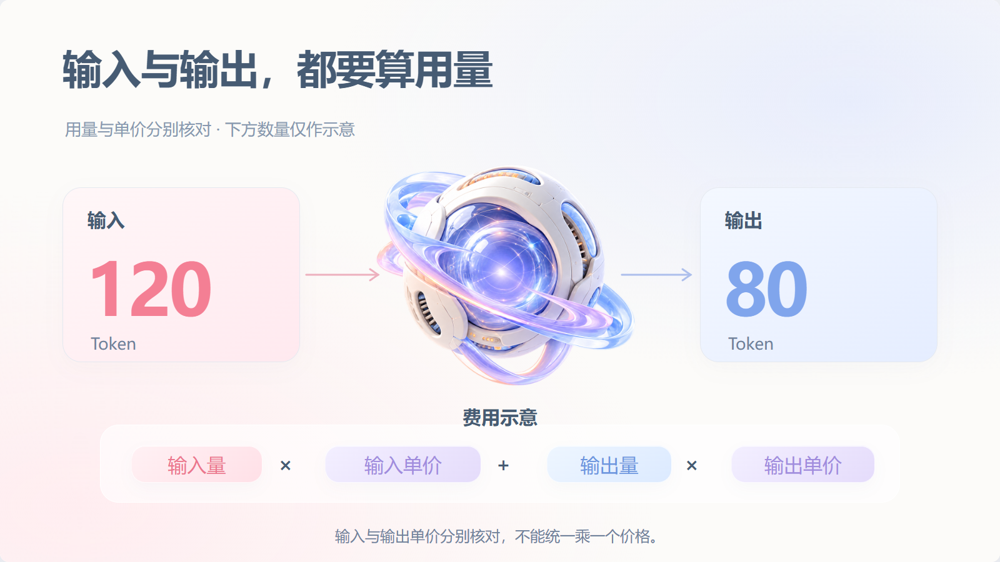
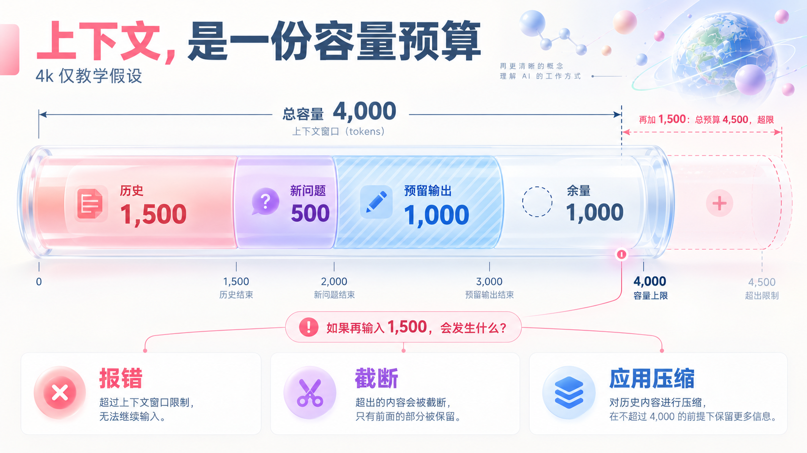
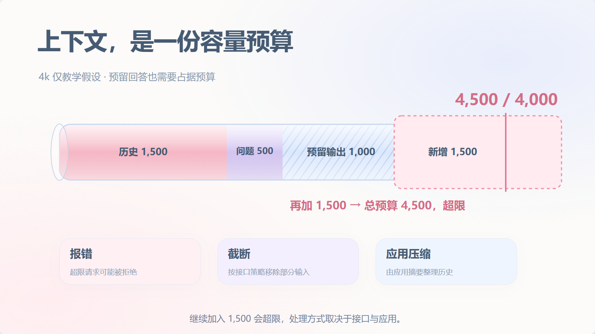
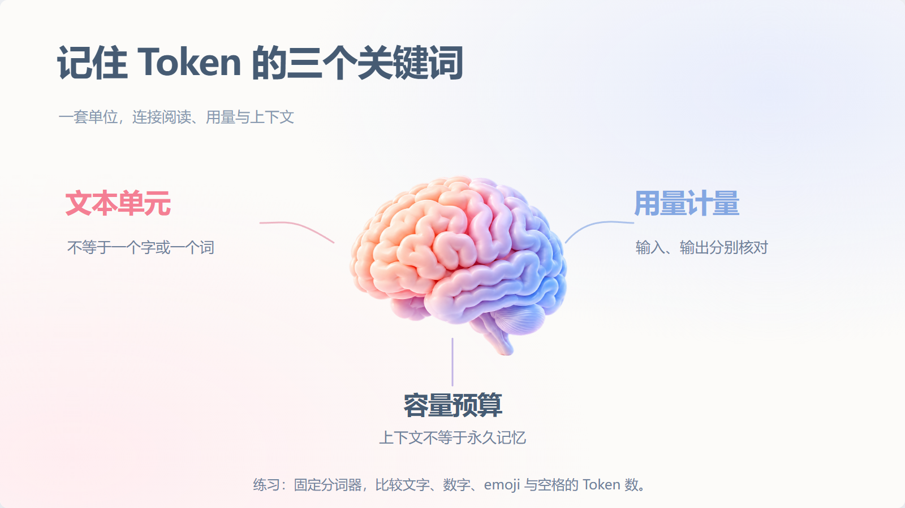

五种构图：设计图与实际终态
设计图先于独立资产和代码。实际文字、数据与容量比例以核对结果为准；省去无关装饰，保留主要构图。
观看实际动画 · 流程与差异记录
Token：文字进入模型的第一步
生图设计参考
实际 HTML / SVG 终态
一个字，不一定是一个 Token
生图设计参考
实际 HTML / SVG 终态
输入与输出，都要算用量
生图设计参考实际 HTML / SVG 终态
上下文，是一份容量预算
生图设计参考
实际 HTML / SVG 终态
记住 Token 的三个关键词
生图设计参考实际 HTML / SVG 终态